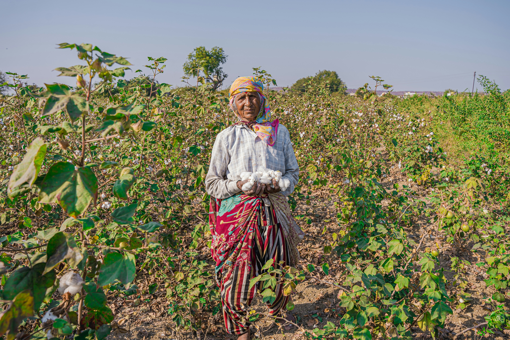
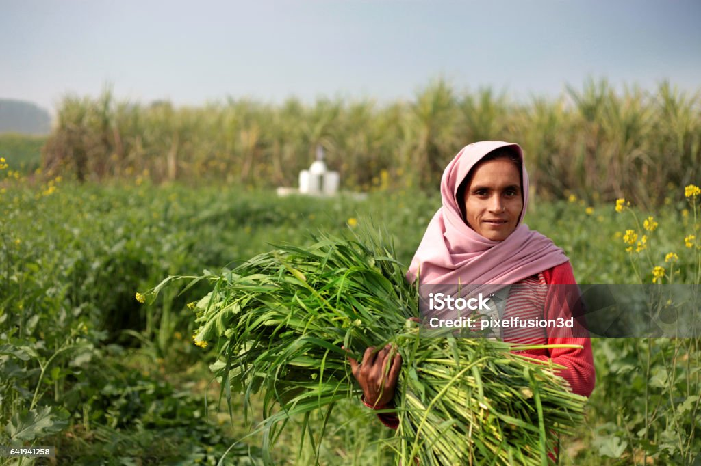

A Hub is a center of effective business activities which operates as a one-stop shop where various products and services are offered. The concept aims at addressing challenges faced by small scale farmers in accessing advice on farming, affordable inputs, markets and other services required for profitable agri-business ventures. Hub creates an ecosystem where collaborations and knowledge transfer can occur in order to spur innovation and business opportunities, thus benefitting the greater network. Agriculture Sector Transformation and Growth Strategy (ASTGS) 2019-2029 envisages that the hub trade should enable co-existence among the private sector players, county governments and other stakeholders in the Agricultural sector. In this regard, NCPB has positioned itself to partner with private sector players in its commercial programs and activities through its commercial arm; The Hub holds various agricultural products including but not limited to food items, farm inputs, farm implements and agrochemicals.